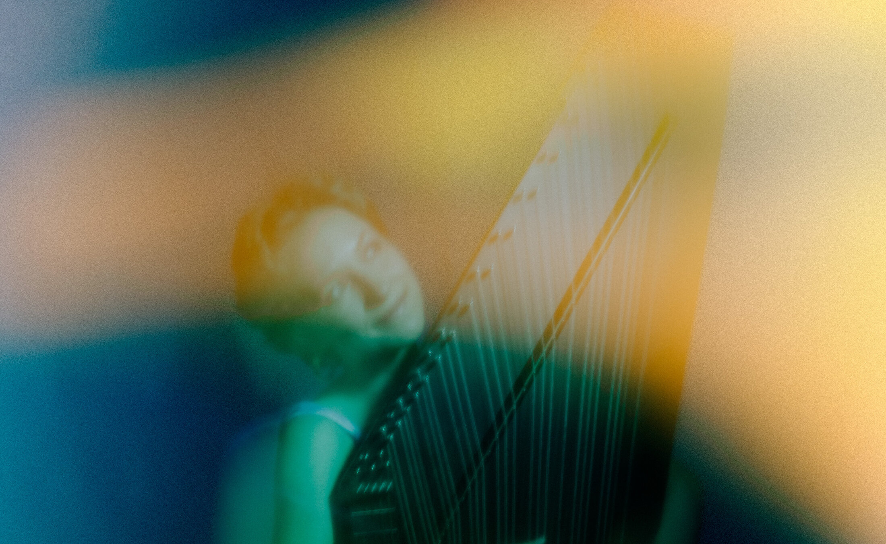

Fotos
Pressefotos



Video
Presse
„Intimacy mit der Zitheristin Sarah Luisa Wurmer" — Interview und Feature bei Deutschlandfunk Kultur.
Zur Sendung „Einstand"„Steve Reich: Piano Phase" mit Sarah Luisa Wurmer und Tajda Krajnc — bei Deutschlandfunk Kultur.
Zur Sendung „Piano Phase"Fotos
Album